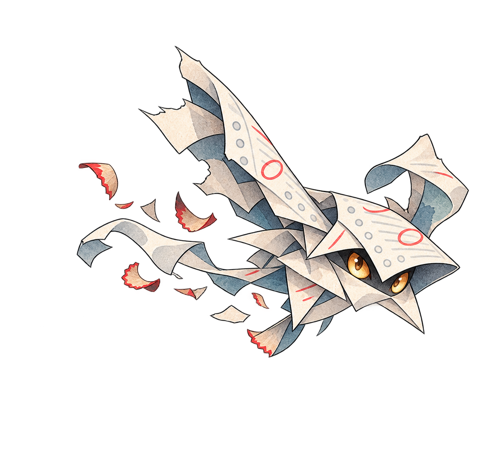
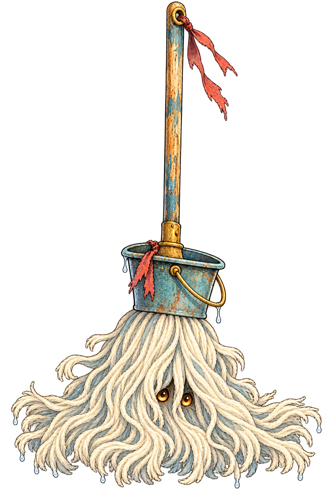
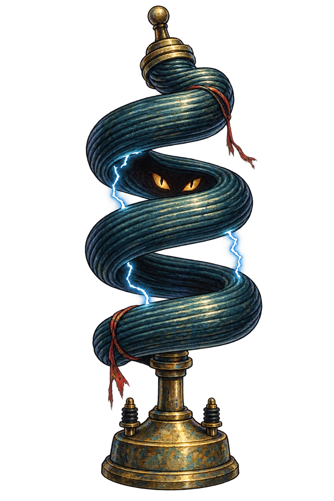
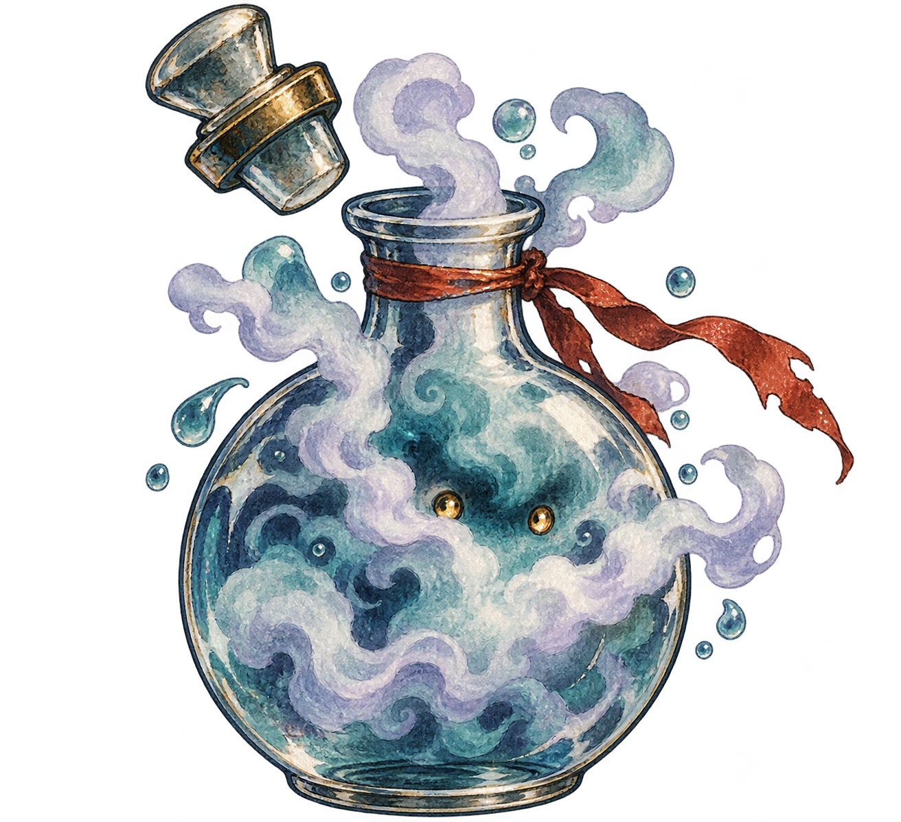
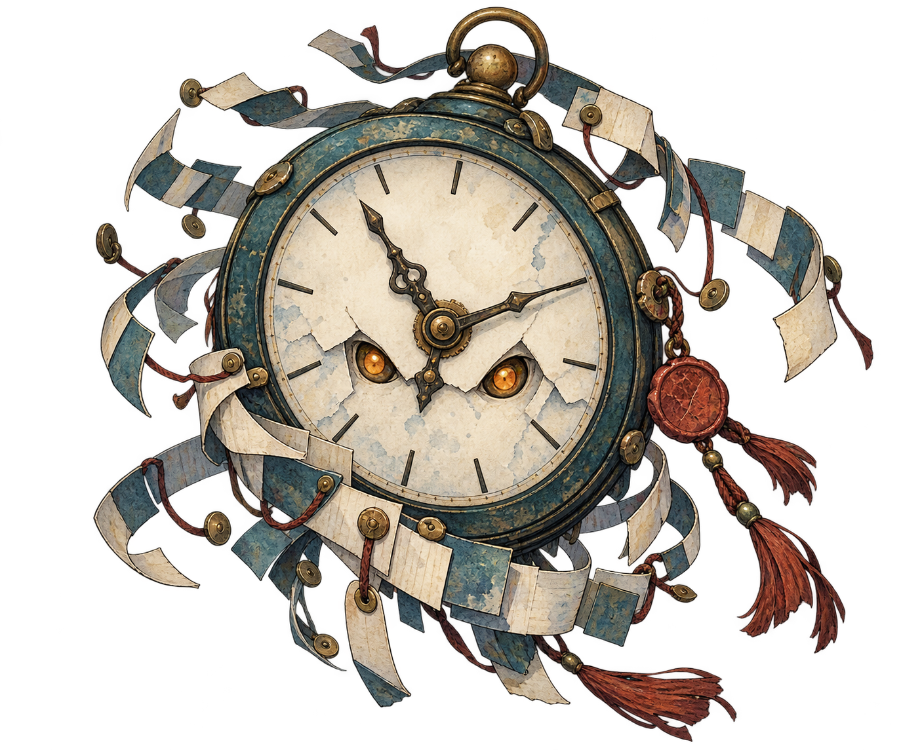

⌁ACT 01 · 4F東棟の廊下
38/ 40

✦文芸部吉野こはる
↑ 1◇ 2

↓ 1
◇答案の切れ端24/24
⚔6×2↙›◇4◉

◇廊下のモップ25/25
⚔3×2 ↙ › ◇4 ◉
◇実験コイル22/22
↑1 ◉ › ◇5 ◉
◇実験室の霧28/28
☷1 ↙
✦記録室の時計31/31
◇4 ◉ › ⚔3 ↙◇答案の切れ端24/24
⚔4×2 ↙ › ↓1 ↙カード名を打つ
7.6秒
◉2 / 3
英単語を直接入力 · 誤キーは無視
✕除外 0
カードを1枚選ぶ
校内経路 · ACT 1 · 1–3 / 15F
次の教室へ
1F
2F
3F
◆入口
✣戦闘
◉休憩
?出来事
⌄この先
いま 1F光る地点から進む
✣攻撃03strike
6単体
•コモン
strike
⚔ 6 対象の敵に攻撃
入力語 s t r i k e
RELIC · レア
図書室のしおり
▤戦闘開始時に1枚ドロー
所持レリック0 → 1
✧吉野こはるの活動記録
今日はここまで
ACT 01東棟 · 4F
最後の一撃答案の切れ端 · 連続攻撃
4進んだ階7使ったカード